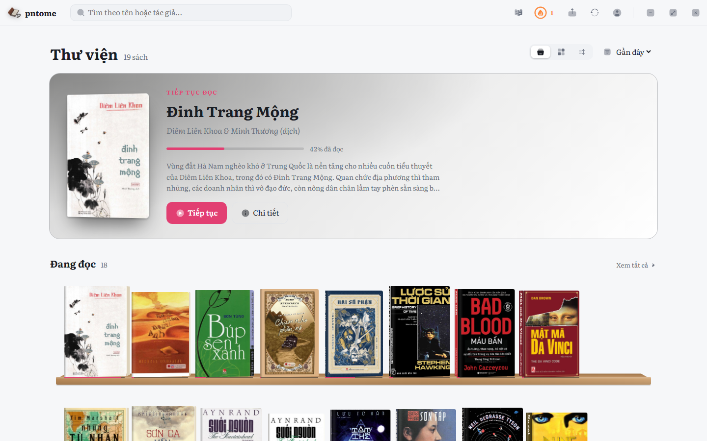

Thư viện Kindle của bạn, trên một kệ sách thật.
Đọc tài liệu cá nhân, tra nghĩa từ chỉ bằng một lần bôi đen và hiểu nhân vật qua X-Ray — trong một app Windows, không cần app Kindle.
Rê chuột để rút sách ra · bấm để xem · kéo để đổi chỗ
Một app, bốn việc.

Thử ngay trên trang.
Hôm nay
20/30
Chuỗi ngày
13
Tải pntome
Windows 10/11 · khoảng 5 MB · miễn phí.
Hỏi đáp
Đọc được những sách nào?
Tài liệu cá nhân bạn gửi qua Send to Kindle. Sách mua có DRM vẫn hiện trên kệ nhưng mở bằng Kindle — app không gỡ DRM.
Dữ liệu của tôi đi đâu?
Thư viện, ghi chú và thống kê nằm trên máy bạn; khoá đăng nhập nằm trong Windows Credential Manager. AI chỉ chạy khi bạn bấm, và chỉ nhận đoạn ngắn trong phần bạn đã đọc.
Từ điển có cần mạng không?
Chỉ lần đầu, để tải dữ liệu Wiktionary và Open English WordNet. Sau đó tra offline.
X-Ray có làm lộ nội dung không?
Không. Mặc định mọi thứ chỉ tính tới trang bạn đang đọc.